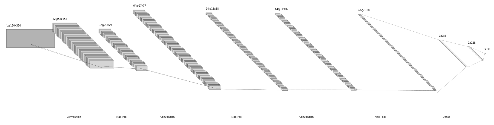
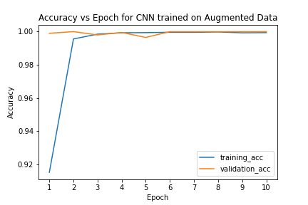
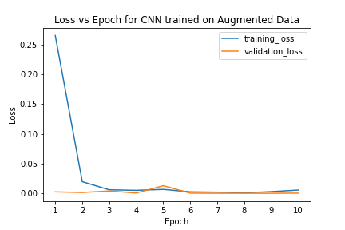

There is a high demand for computer vision techniques to detect hand gestures for social media applications that require a video component.
For instance, TikTok currently has a filter that detects hand gestures and captures photos in response to the hand gesture. In the current
implementation, a recognized gesture will trigger a snapshot of the user. However, the hand gestures are restricted to a set of hand gestures
proposed by TikTok. Due to the scalability and diversity of the consumer base, it is very beneficial to expand this capability such that
users may specify custom hand gestures to indicate they want to capture photos during a TikTok video.
This problem is important because it relates to the productivity and outcome of TikTok content creators. The appeal of TikTok is the uniqueness
and diversity of the content creators. It is obvious that the limitations of only certain hand gestures that may be registered by TikTok may
hinder the creativity of Tiktokers and could both hamper the success of content creators and diminish the experience of TikTok users.
Here is a video of the current implementation of the TikTok hand gesture recognition.
Here is the approach I used, I used a deep neural network, specifically a convolutional neural network, This is actually the architecture of my neural network, you can see the input layer is a 1 channel 120x320 pixel image, and it outputs a vector of size 10 which contains the classification of what hand gesture it is. It is one channel because input images are black and white.

For those that might not know, A convolutional neural network is a type of neural network that is specifically designed to analyze and
classify visual images. It is called a convolutional neural network because it uses a technique called convolution to process the image data.
In convolution, the network applies a set of filters to the image to extract features and patterns. The network then uses these features to
classify the image into different categories. This allows the network to accurately recognize and classify complex visual patterns in images.
Convolutional neural networks learn through a process called training. In training, the network is presented with a large number of labeled images,
where the labels indicate the correct category for each image. The network then uses these labeled images to adjust its internal parameters, called weights,
in order to improve its ability to classify images correctly. This is done through a process called backpropagation, where the error between the
predicted and true labels is calculated and used to adjust the weights. Through this process, the network gradually improves its accuracy in classifying images.
For the implementation, I used Python and a few libraries. I used the OpenCV library to capture images from a webcam, and the Keras library to implement the
neural network, NumPy to manipulate the image data, Matplotlib to plot the accuracy graph and the images, PIL to handle the image data, pandas and sklearn
to create a confusion matrix.
I used Python because it is a popular programming language, and has a lot of libraries that are useful for machine learning and computer vision tasks.
For the neural network, I used the Root Mean Squared Propagation optimizer, which is a type of gradient descent algorithm, the categorical crossentropy loss function, ReLU activation functions for
the hidden layers, and the softmax function for the output layer. After implementing the above neural network, I trained it on a dataset of 16000 images, there
were images for each of the 10 classes (palm, L, fist, fist moved, thumbs up, index, OK, palm moved, C, thumbs down). For training, I used a GPU to speed up the training process,
and I used the Keras library to implement the neural network. I used the Keras library because it is a high-level neural network API that is easy to use and has a lot of
built-in functionality. For the training hyperparameters, I used a batch size of 64 and 10 epochs. I used a batch size of 64 because it is a common batch size, and I used 10 epochs
because I found that 10 epochs was a good balance between training time and accuracy. I also used a validation split of 0.1, which means that 10% of the training data was used for validation during training.
Here is a graph of the training and validation accuracy over the 10 epochs and the loss vs epoch for training and validation.
To then test the accuracy of the model, I used the test set, which was a set of 2000 images. The test set was used to test the accuracy of the model after training.
The test set was not used during training, so the accuracy of the model on the test set is a should be a good indication of how well the model will perform on real-time data.
The model was able to achieve 100% accuracy on the test set, which seemed unusually good, but when I tested the model on real-time data, it performed pretty poorly.
More on that later.
OpenCV got images from my webcam, which are RGB, so I converted them to grayscale, and then resized them to 120x320 pixels.
I then used the model to predict the class of the image, and then displayed the image and the predicted class. To replicate the TikTok filter
I mentioned earlier, I kept a queue of the last 10 predictions, and if the most common prediction in the queue was a certain class, then I would
take a screenshot of the image.
Here are some clips demoing the program.
This first clip shows the program running, and it correctly classifies the hand gesture of an open palm.
This next clip shows the model correctlly classifying the L-shape made by the hand.
This next clip shows the model correctly classifying the OK-hand sign.
In the last clip you can see it fade to black at the end. This is because true to the motivation of the project, similar to the TikTok filter, the program takes a screenshot of the image when it detects a certain hand gesture. Which in this case I specified in the code to be the OK-hand sign. It could be any gesture, but I chose the OK-hand sign because it is a gesture that is commonly used in TikTok videos. As mentioned preivously, the way I chose to determine if a certain gesture was detected was by keeping a queue of the last 10 predictions, and if the most common prediction in the queue was a certain class, then I would take a screenshot of the image. This is a simple way to determine if a certain gesture was detected, it is not very accurate, and it is not very robust, however, it suffices for this implementation.
Back to the problem mentioned above, my first network had 100% accuracy on the test set, but performed poorly when using real-time data. I conjectured
that this was because the training and test set was a set of images that were all taken in the same way, but real-time data is taken in a variety of ways.
I then created a second convoltuional neural network with the same architecture as the first, but this time I tried to combat the low accuracy of real-time data
by augmenting the training data by randomly flipping rotating and adding noise to the images, essentially creating new images.
By providing the network with a larger and more diverse dataset, data augmentation can help to improve the accuracy of the network's predictions. This is because the network is
able to learn a wider range of patterns and variations in the data, which allows it to better generalize to new, unseen data.
This resulted in the following graphs.


While the training, validation, and test accuracy (100% test accuracy, the same as non augmented) was similar to the first network, the loss on the test set
was slightly lower for the original data, and the accuracy on real-time data felt much higher. I say 'felt' as I wasn't sure
if the accuracy was actually higher during real-time data testing, but I think it was. I think this is because the network was
able to generalize better to real-time data, as it was trained on a larger and more diverse dataset. But this is all conjecture
and I don't have any hard evidence to back it up.
For any future work on this and related projects, it would be beneficial to try to improve the accuracy of the model on real-time data. I think this could be done by having a larger dataset, either by augmenting the training data even more or simply expanding the current dataset by taking more pictures of hands in many different scenarios, and also by using a different model architecture.